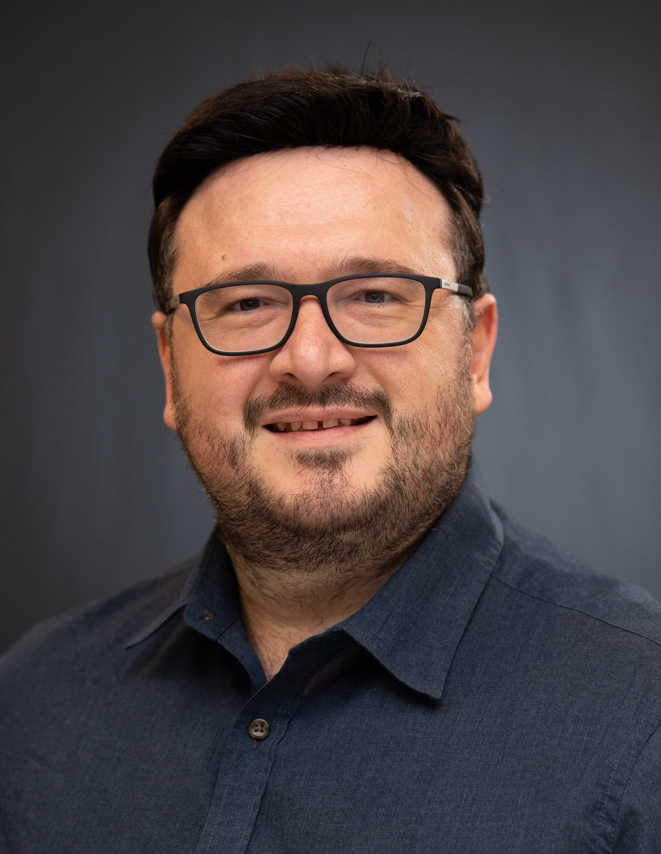

Burak Kürkçü

Assistant Professor
Electrical and Computer Engineering
Santa Clara University
Bio
Before joining SCU, I was a Research Scholar at UC Berkeley for two years, working with Professor Masayoshi Tomizuka. I previously held an Assistant Professor position at Hacettepe University and spent a decade as a Senior Control System Design Engineer at Aselsan.
I received my Ph.D. and M.Sc. from TOBB University of Economics and Technology in 2019 and 2015, and my B.Sc. from Istanbul Technical University in 2010. I received the IEEE Turkey Ph.D. Thesis Award in 2020. I am a Senior Member of the IEEE and an Associate Editor of TIMC, Measurement and Control, and the Turkish Journal of Electrical Engineering and Computer Science.
Research
My research interests include:
- Uncertainty-aware control: disturbance estimation, stable inversion, and nonlinear output-feedback control. I also study Koopman-Galerkin methods based on infinite-dimensional operator representations.
- Soft robotics: modeling, design, and control of soft actuators and robotic systems.
- Learning and data-driven modeling: system identification and methods for learning multiple functions and datasets within a common model, including switched neural networks and simultaneous learning.
Application areas include soft robots, biomimetic systems, gimbal stabilization, motion-control platforms, UAV flight control, and autonomous multi-agent systems.
Updates and News
10 Oct 2026: Our paper with Mücahid Rıdvan Kaplan and Mehmet Önder Efe received the Best Paper Award at IFACxTürkiye 2026 (TOK 2026).
5 Oct 2026: Our new preprint on Koopman-Galerkin based robust nonlinear output-feedback control is now available. arXiv, code.
25 Jun 2026: Christopher Phan, the first M.S. graduate from our SoftCon Lab, received three awards for academic excellence and research. He is now continuing his Ph.D. in our lab. post.
21 Jan 2026: Happy to share you that I have been elected as the Chair for the IEEE SCV/SF Joint Section Control System Chapter (CSS/SMC)!
04 Dec 2025:Happy to share that I have been elevated to IEEE Senior Member. Grateful to my colleagues/mentors and family for their support.
23 Aug 2025: We have a new paper accepted to IEEE Transactions on Automatic Control.
- B. Kürkçü and M. Tomizuka, "Algebraic Control: Complete Stable Inversion with Necessary and Sufficient Conditions," IEEE Transactions on Automatic Control. Link to the paper.